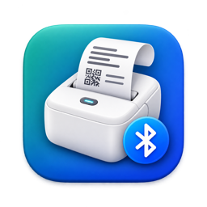

Mac driver for the Luck Jingle S1 Bluetooth thermal printer
Print receipts, tickets and labels from Chrome, Safari, Preview or any app on your Mac, straight to your Luck Jingle S1 mini printer over Bluetooth. No vendor driver needed.
Free and open source (MIT) · macOS 13 or later · Signed and notarized by Apple · by Marvin Quevedo
Is this your problem?
- Your Mac pairs the printer (
PPS1_XXXX, often shown with a keyboard icon) but it never appears in Printers & Scanners. - Luck Jingle has a phone app and A4 drivers, but no Mac driver for the S1.
- You need to print a 58 mm receipt, ticket or label from a web page or a PDF.
S1Print adds a normal printer called S1 Bluetooth to macOS. Pick it in any print dialog.
Install in three steps
- Pair the printer: System Settings → Bluetooth → connect
PPS1_XXXX. - Install S1Print: download the zip, move S1Print.app to Applications and open it. Allow Bluetooth when asked.
- Print: choose S1 Bluetooth and the 58x600mm paper size (the 58 mm roll).
What it does
- Driverless printing from every app: browsers, Preview, Word, point-of-sale and invoicing web apps.
- A 58 mm roll size that trims blank paper, 80 mm receipts scaled to fit, label sizes and a custom size.
- Sharp small text and QR codes: content is rendered at 406 dpi and fitted to the 48 mm head.
- A menu-bar app with battery and paper status, a test page, and settings for darkness, printer name and sharing.
- Private by default: only your Mac can send jobs to the printer.
Compatibility
| Printer | Status |
|---|---|
Luck Jingle S1 (S1_LYiN48D_GY), 56–58 mm paper | Tested |
| Other Luck Jingle / LuckPrinter models | Untested — tell us your model |
| Windows and Linux | Planned |
Frequently asked questions
Why doesn't my Bluetooth thermal printer show up on my Mac?
macOS only adds Bluetooth printers that use the Bluetooth printing profile. Mini thermal printers like the S1 use a serial port profile instead, so the Mac pairs them but cannot print without software such as S1Print.
How do I print a receipt from Chrome or Safari?
Choose S1 Bluetooth and 58x600mm. In Chrome set Margins to None and turn off headers and footers; in Safari save the size as a preset.
The print comes out small.
Use the 58 mm roll size, not Letter or A4. A page laid out wider than 58 mm is shrunk by the browser.
How does it work?
A local IPP Everywhere print server receives each job from macOS, converts it for the 384-dot head and sends it over Bluetooth. Read the technical paper.
En español: driver para Mac de la impresora térmica Luck Jingle S1
Imprima tickets, facturas y etiquetas desde Chrome, Safari o cualquier app de su Mac en una mini impresora térmica Luck Jingle S1 por Bluetooth, sin driver del fabricante. Gratis y de código abierto.
¿Su Mac empareja la impresora (PPS1_XXXX, con ícono de teclado) pero no aparece en Impresoras y escáneres? Eso es lo que S1Print resuelve.
- Empareje la impresora en Configuración del Sistema → Bluetooth.
- Descargue S1Print, muévalo a Aplicaciones, ábralo y permita el Bluetooth.
- Imprima eligiendo S1 Bluetooth y el tamaño 58x600mm.